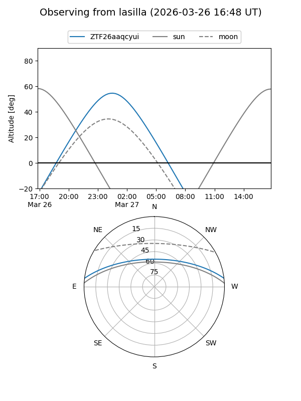
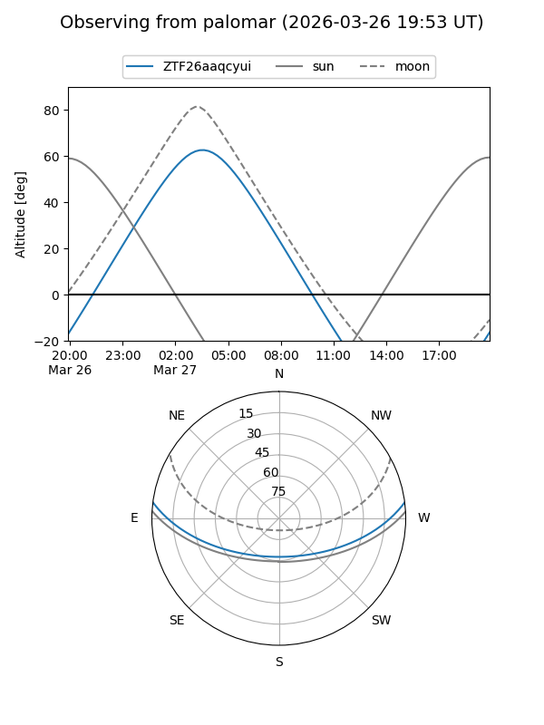

ZTF26aaqcyui
Target ZTF26aaqcyui at 2026-03-27 05:02
Aliases and brokers:
FINK: link
Lasair: link
ALeRCE: link
alt names
ZTF26aaqcyui (ztf,fink_ztf)
Coordinates:
equatorial (ra, dec) = 120.4842,+6.12114
equatorial (HMS+DMS) = 08:01:56.21,+06:07:16.12
galactic (l, b) = (215.4924,+18.45486)
Flags:
Photometry:
last ztfg=19.67
1 ztfg detections
Lightcurve
Visibility


Additional plots